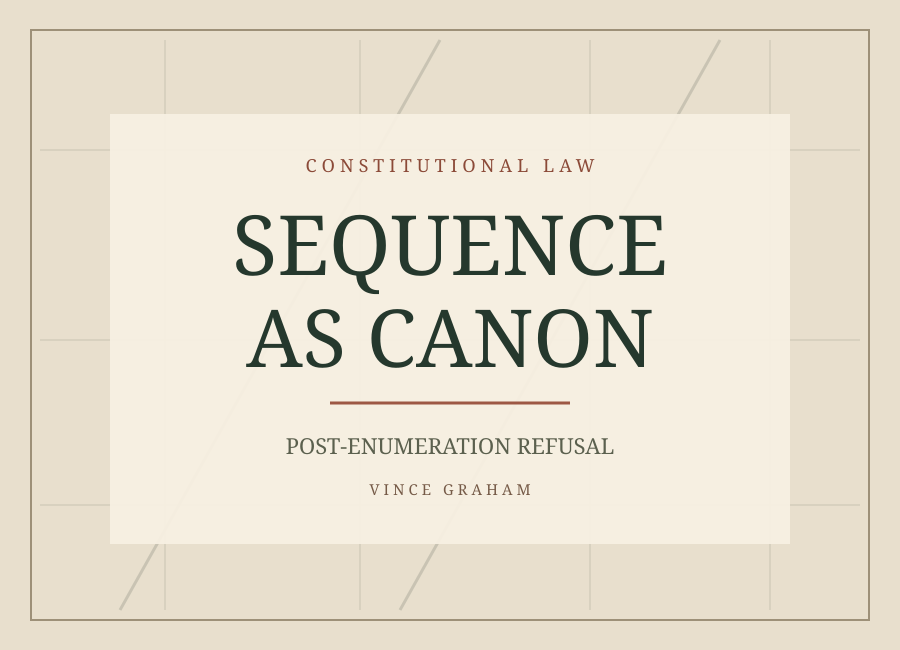

Sequence
as Canon
Post-Enumeration Refusal and the Limits of Implied Infrastructure Power

This Article advances a sequence-based canon of constitutional interpretation: when the Framers completed the enumeration of congressional powers and thereafter deliberately considered and rejected additional authority, that refusal constrains the meaning of the enumerated text. Drawing on James Madison’s Notes of Debates in the Federal Convention of 1787, Max Farrand’s Records, early executive practice, nineteenth-century campaign platforms, and later judicial doctrine, the Article demonstrates that federal authority to fund internal improvements or charter corporations was repeatedly proposed and consciously refused after the scope of Article I powers had been settled. The Supreme Court’s subsequent embrace of implied infrastructure power, culminating in Wilson v. Shaw (1907), reflects not ambiguity in the founding text, but abandonment of that sequence. The Article concludes by assessing the implications for stare decisis and constitutional restraint.
The argument
Modern constitutional doctrine treats federal infrastructure authority as an implied incident of enumerated powers. This assumption is deeply entrenched, rarely questioned, and widely regarded as settled. Yet the historical record tells a different story - one not of silence or ambiguity, but of deliberate refusal.
The manuscript follows the Constitutional Convention's debates about federal incorporation and canal construction, the Bank Bill of 1791, nineteenth-century executive objections to infrastructure funding, and the Supreme Court's decision in Wilson v. Shaw (1907). It argues that a proposal deliberately rejected after the enumeration of powers should constrain later claims of implied federal authority.
“When enumeration is followed by express refusal, implication cannot later be used to resurrect the rejected power.”
The quotation above is excerpted from the supplied manuscript. The explanatory paragraph is an editorial summary of its argument, not an endorsement of its legal conclusions.
Read the original work
The complete document, including citations and footnotes, is available in its original Word format. This page presents a short introduction rather than an independently edited or verified law review publication.
Download the complete manuscript ↓Return to the archive →Before launching publicly, confirm publication status, attribution, and distribution permission with the author. The manuscript's legal and historical claims have not been independently fact-checked here.